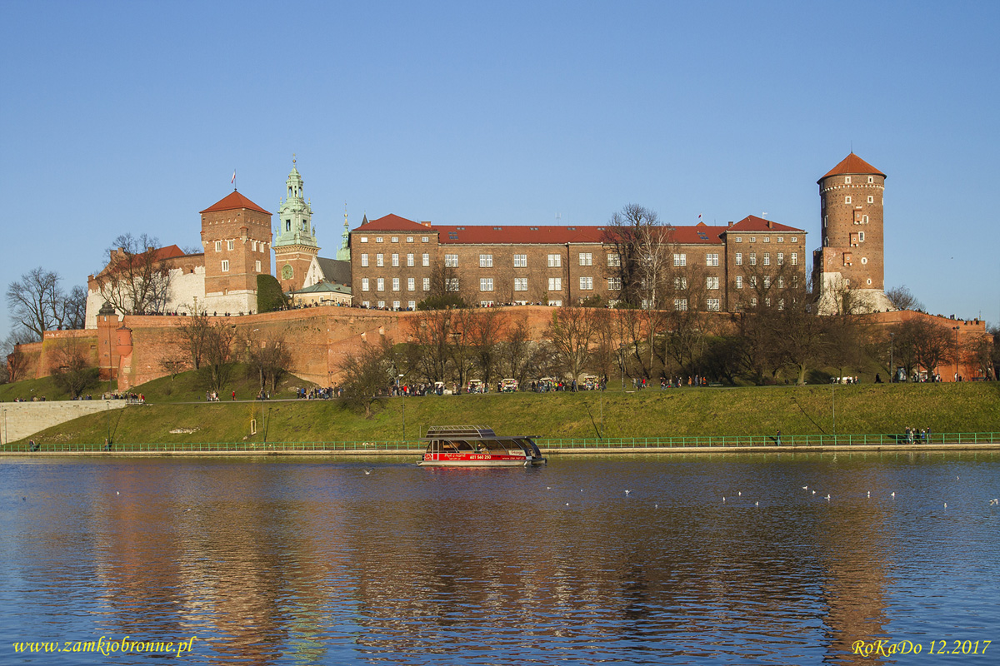
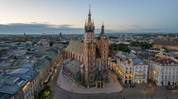

Kraków, Stołeczne Królewskie Miasto Kraków – miasto na prawach powiatu położone w południowej Polsce nad Wisłą, drugie co do liczby mieszkańców. Formalna stolica Polski do 1795 r. i miasto koronacyjne oraz nekropolia królów Polski. Od 1000 r. nieprzerwanie stolica diecezji krakowskiej (jednej z pięciu w ówczesnej Polsce), a od 1925 r. archidiecezji i metropolii. Lokowany przed 1228 r., ponownie w 1257 r. Od odzyskania niepodległości w 1918 r. miasto wojewódzkie (od 1999 r. siedziba władz województwa małopolskiego), jest także centralnym ośrodkiem metropolitalnym aglomeracji krakowskiej i Krakowskiego Obszaru Metropolitalnego. Kraków jest stolicą historycznej Małopolski. Leży na obszarze Bramy Krakowskiej, Niecki Nidziańskiej i Pogórza Zachodniobeskidzkiego.W Krakowie mieszczą się główne siedziby m.in.: Polskiej Akademii Umiejętności, Narodowego Centrum Nauki, Instytutu Nafty i Gazu – Państwowego Instytutu Badawczego, Instytutu Zootechniki – Państwowego Instytutu Badawczego, Krajowej Szkoły Sądownictwa i Prokuratury, struktury dowodzącej Wojskami Specjalnymi, Centrum Operacji Lądowych – Dowództwa Komponentu Lądowego, Polskiego Związku Narciarskiego, Operacyjno-Strategicznego Dowództwa Unii Europejskiej[12], Centrum Eksperckiego Kontrwywiadu NATO, Narodowego Centrum Radioterapii Hadronowej, Centralnego Ośrodka Turystyki Górskiej i Instytutu Ekspertyz Sądowych im. Prof. dra Jana Sehna. Krakowie, Muzeum Narodowe, Panteon Narodowy, Krypta Zasłużonych na Skałce, Krypta Wieszczów Narodowych na Wawelu, Archiwum Narodowe, Biblioteka Jagiellońska, Instytut Książki, Instytut Literatury, Narodowe Centrum Nauki, Narodowe Centrum Rugby, Europa Nostra. Miasto na prawach powiatu pełni funkcję centrum administracyjnego, kulturalnego, edukacyjnego, naukowego, gospodarczego, usługowego i turystycznego. Kraków jest drugim co do wielkości, po Warszawie, rynkiem nowoczesnej powierzchni biurowej (ponad milion metrów kwadratowych powierzchni biurowej), a także jednym z kluczowych węzłów kolejowych w Polsce.

Na terenie zamku podczas wykopalisk archeologicznych stwierdzono istnienie już w XI wieku dużej liczby obiektów murowanych, także o charakterze rezydencjonalnym. Taką funkcję mogła pełnić tzw. sala o 24 słupach, którą określa się jako palatium. Większy zamek obronny zbudowano na przełomie XI i XII wieku w północno-wschodnim narożniku wzgórza. Było to skutkiem przeniesienia stolicy Polski do Krakowa. Rezydencja, wzniesiona w stylu romańskim, składała się co najmniej z czworokątnej wieży obronnej przy Kurzej Stopce i budynku mieszkalnego. Oprócz tego znajdowały się w pobliżu liczne budynki sakralne. Na wschód od wąwozu, dzielącego wówczas wzgórze, Wawel okrążono pierścieniem murów i dobudowano kolejne obiekty. Zespół ten nazwano zamkiem wyższym. Na zachód od wąwozu wznosił się tzw. zamek niższy, będący osadą przygrodową. W jego wale, powstałym po 1016 roku, wzniesiono murowaną przedromańską szyję bramną w rejonie Smoczej Jamy. Drugi murowany wjazd bramny – datowany na lata po 1016 lub po najeździe Brzetysława w 1036 roku – powstał w rejonie Baszty Senatorskiej. W pierwszej połowie XII wieku w linię obwarowań na wschodnim skraju wzgórza wawelskiego wkomponowano murowaną wieżę obronną zbudowaną na planie kwadratu i określaną od momentu odkrycia jako tzw. stołp romański. W tym samym okresie w system obwałowań od strony wschodniej w bezpośrednim sąsiedztwie starszej murowanej szyi bramnej wkomponowano drugą murowaną wieżę o formie cylindrycznej. Z opisu Jana Długosza wynika, że gród wawelski i Okół obroniły się w 1241 roku przed oblężeniem tatarskim. Ok. 1265 roku Bolesław Wstydliwy dokonał wielkiej przebudowy drewniano-ziemnych fortyfikacji grodu wawelskiego. W 1289 roku istniały już na zamku kamienne mury obronne zbudowane przypuszczalnie przez księcia Leszka Czarnego.

Według Jana Długosza pierwszy murowany kościół w stylu romańskim został ufundowany przez biskupa krakowskiego Iwona Odrowąża w latach 1221–1222 na miejscu pierwotnej drewnianej świątyni. Wkrótce jednak budowla została zniszczona podczas najazdów tatarskich na ziemie polskie. W latach 1290–1300 wzniesiono, częściowo na poprzednich fundamentach, wczesnogotycki kościół halowy, który konsekrowano około lat 1320–1321. Prace jednak kontynuowane były jeszcze w trzeciej dekadzie czternastego stulecia. W latach 1355–1365 dzięki fundacji Mikołaja Wierzynka (mieszczanina krakowskiego i stolnika sandomierskiego) wzniesiono obecne prezbiterium. Z kolei w latach 1392–1397 polecono mistrzowi Mikołajowi Wernerowi lepsze doświetlenie kościoła. Budowniczy obniżył mury naw bocznych, a w murach magistralnych wprowadził duże otwory okienne. W ten sposób halowy układ świątyni zmienił się na bazylikowy. W 1443 (lub 1442) roku miało miejsce silne trzęsienie ziemi, które spowodowało runięcie sklepienia świątyni. W pierwszej połowie XV wieku dobudowano kaplice boczne. Większość z nich była dziełem mistrza Franciszka Wiechonia z Kleparza. W tym też czasie podwyższona została wieża północna, przystosowana do pełnienia funkcji strażnicy miejskiej. W 1478 roku cieśla Matias Heringkan pokrył wieżę hełmem. Na nim w 1666 roku umieszczono złoconą koronę. W końcu XV wieku świątynia Mariacka wzbogaciła się o arcydzieło rzeźbiarskie późnego gotyku – Ołtarz Wielki – dzieło Wita Stwosza. Na początku XVI wieku polscy rajcy zaczęli domagać się spolszczenia tego kościoła, który należał do gminy niemieckiej Krakowa. W opozycji do nich stanęli niemieccy burmistrzowie miasta Cipsar, Morsztyn, Ajchler i Szyling, którzy bronili swego stanu posiadania. W spór wdał się również sejm, który w 1537 roku i pod naciskiem szlachty uznał edyktem króla Zygmunta I, żeby poranne nabożeństwa niemieckie ograniczyć do poobiednich[6]. W XVIII wieku na polecenie archiprezbitera Jacka Augustyna Łopackiego wnętrze gruntownie przerobiono w stylu późnego baroku. Autorem tych prac był Francesco Placidi. Wymieniono wtedy 26 ołtarzy, sprzęt, wyposażenie, ławy, obrazy, a ściany ozdobiono polichromią pędzla Andrzeja Radwańskiego. Z tego okresu pochodzi również późnobarokowa kruchta. Na początku XIX wieku wskutek wprowadzenia austriackich przepisów sanitarnych i w ramach porządkowania miasta zlikwidowano przykościelny cmentarz. W ten sposób powstał plac Mariacki. W latach 1887–1891 pod kierunkiem Tadeusza Stryjeńskiego, wprowadzono do wnętrza wystrój neogotycki. Świątynia zyskała nową polichromię projektu i pędzla Jana Matejki, z którym współpracowali: Stanisław Wyspiański i Józef Mehoffer – autorzy witraży w prezbiterium i nad organami głównymi. Od początku lat 90. XX wieku prowadzone były kompleksowe prace restauracyjne, w wyniku których kościół odzyskał swój wspaniały blask. Ostatnim akcentem remontowym była wymiana pokrycia dachu w 2003 roku. 18 kwietnia 2010 roku w kościele Mariackim odbyła się uroczystość pogrzebowa tragicznie zmarłego prezydenta RP Lecha Kaczyńskiego i jego żony Marii, których trumny następnie pochowano w jednej z krypt katedry na Wawelu.
Smok Wawelski – rzeźba plenerowa z brązu autorstwa Bronisława Chromego z 1972 roku, przedstawiająca legendarnego smoka wawelskiego. Według pierwotnej koncepcji smok miał być częściowo zanurzony w wodach Wisły. Stwierdzono jednak, że śmieci niesione przez nurt rzeki będą osadzać się na rzeźbie. Dlatego w 1972 r. została ona osadzona na bloku nad Wisłą przy wzgórzu wawelskim, obok obecnego wyjścia ze Smoczej Jamy. Wiosną 1973 r., wewnątrz rzeźby zamontowana została instalacja gazowa ziejąca ogniem; autorem i wykonawcą systemu gazowo-elektrycznego był Feliks Prochownik. Smok zieje ogniem co trzy minuty. Rzeźba jest jedną z najsłynniejszych atrakcji turystycznych Krakowa.